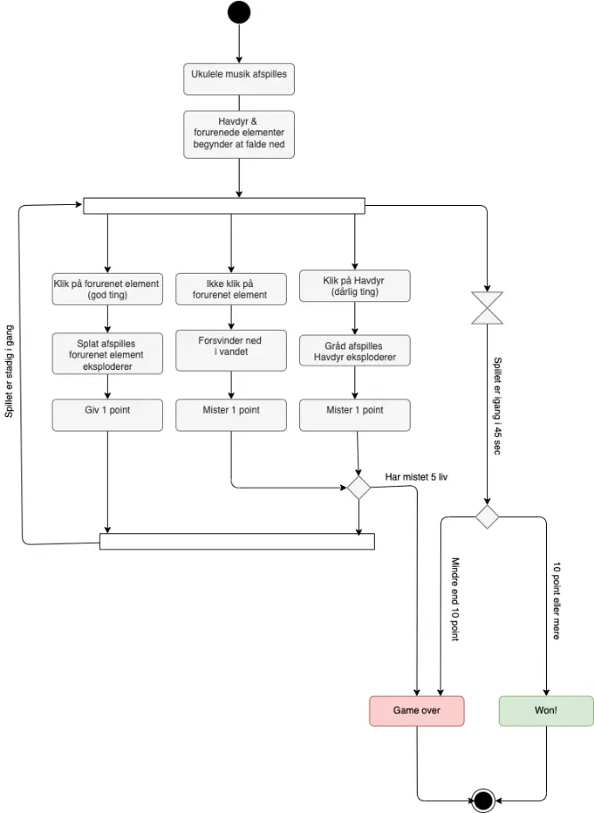
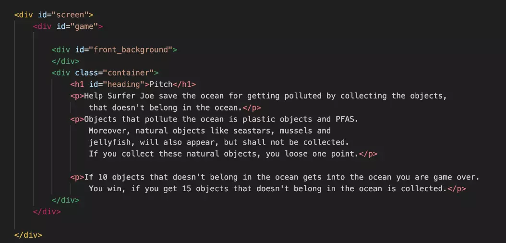
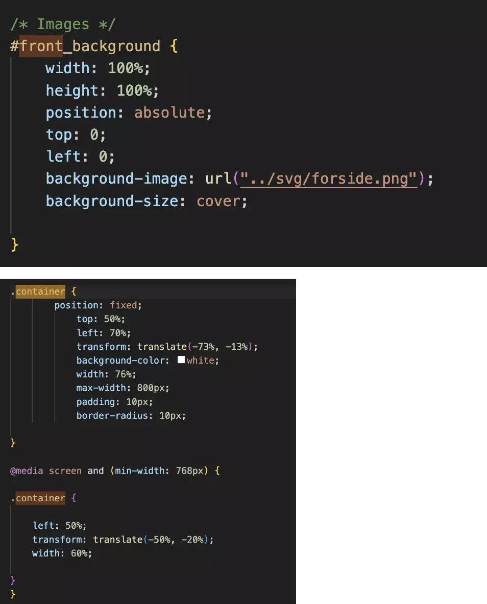
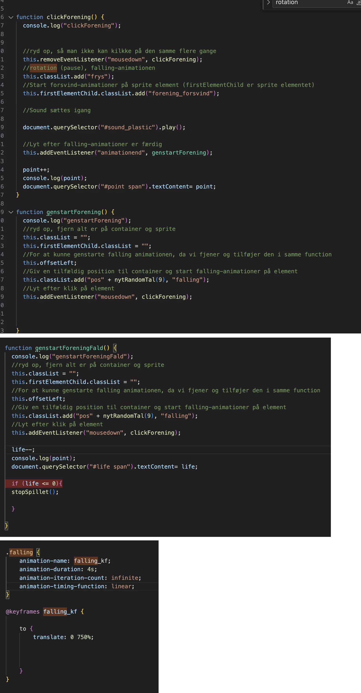

+ 04 animation
Point & Shoot Game

Point & Shoot
I tema 4 fik vi praktisk erfaring med forskellige frontend-teknologier såsom CSS, JavaScript, Audition og Illustrator, samt Chrome/Firefox Inspector-værktøjerne. Vi udviklede CSS-animationer og implementerede JavaScript med forskellige funktioner såsom addClass/removeClass, variabler, events (load, click, animationend, animationiteration), betingelser (if-else) og math.random. I designprocessen fik vi færdigheder inden for idegenerering ved hjælp af teknikker som mind map og krydsmetode, for at udvikle ideer og skabe et visuelt koncept. Vi arbejdede med udvikling af figur-elementer, spil-elementer, baggrundsdesign, UI-elementer, typografi, farver og komposition ved hjælp af Illustrator-programmet. Vi dokumenterede vores design gennem moodboards, figur-skitser, layout-skitser og Style Tiles. Til sidst gennemførte vi en peer-to-peer-feedbackproces, hvor vores studiekammerater gav feedback på vores produkt. Dette hjalp os med at forbedre og finpudse vores design og implementering ved at få indsigter og perspektiver fra andre. Samlet set gav tema 4 os en praktisk forståelse af forskellige frontend-teknologier og værktøjer samt evnen til at generere ideer og skabe et visuelt koncept. Vi lærte også vigtigheden af dokumentation og feedbackprocessen for at forbedre vores arbejde.
Pitch
Hjælp Surfer Joe med at redde havet fra at blive forurenet ved at samle genstandene op, der ikke hører hjemme i havet. Genstande, der forurener havet, er plastik, olie og PFAS. Derudover vil naturlige genstande som søstjerner, muslinger og vandmænd også dukke op, men de skal ikke samles op. Hvis du samler disse naturlige genstande op, mister du et point. Hvis 5 genstande, der ikke hører hjemme i havet, kommer i havet, er det game over. Du vinder, hvis du samler 10 genstande op, der ikke hører hjemme i havet.

animation
De onde og de gode genstande vil falde ned tilfældigt fra himlen og ned i havet, hvis de ikke bliver samlet op af spilleren. Hvis du klikker på en god genstand (forurenende elementer), vil den eksplodere og forsvinde, samtidig med at der afspilles en splash-lyd. Herved får du 1 point. Hvis du ikke klikker/samler de gode genstande (forurenende elementer), vil de komme ned i havet, og der vil afspilles en lyd, der indikerer, at du mister et liv. Derefter mister du 1 liv. Hvis du klikker på en ond genstand (havdyr), vil den eksplodere og forsvinde, samtidig med at der afspilles en trist lyd. Herved mister du 1 liv. Hvis du ikke klikker/samler de onde genstande, vil de blot falde ned i havet uden konsekvenser. Liv vil blive vist som hjerter, og tiden vil blive vist som et timeglas, hvor farverne forsvinder, efterhånden som tiden går. Game over-skiltet vil være et hav fyldt med forurenede genstande. Vindeskiltet vil være et rent hav.
Styletile
Jeg har valgt kunstneren Jeróme Masi som stilart for mit design. Masi er kendt for at skabe minimalistiske designs med klare og skarpe farver. Hans værker er præget af en stærk kontrast og er inspireret af Bauhaus-stilen, hvor grafiske figurer skabes ved hjælp af simple former. Masi anvender også loven om forbundethed, hvor former er tydeligt forbundet og skaber en figur. I mine design har jeg taget inspiration fra Masi ved at anvende negativt rum og fokusere på en hovedfigur som det centrale element. Baggrundene er valgt i skarpe og intense farver, der skaber kontrast og tilføjer energi til designet. Jeg har brugt reglen om tredjedele til at placere hovedfiguren som fokuspunkt og skabe balance i kompositionen. Desuden har jeg brugt mørkere nuancer til at skabe atmosfærisk perspektiv og tilføje dybde til designet. Ved at anvende Masis stilart forsøger jeg at skabe et visuelt udtryk, der er minimalistisk, kontrastfuldt og grafisk i sin fremtoning. Jeg ønsker at fange betragterens opmærksomhed og skabe en visuel oplevelse med min brug af farver, former og komposition.

Baggrunde


Designelementer
Karaktererne er tegnet med en solid streg. Søstjernen, muslingen, flasken og PFAS-tønden er symmetriske. Medusen og plastikposen er asymmetriske, da de er lavet af et blødere materiale sammenlignet med de andre karakterer. Alle karakterer har bløde og enkle former med få detaljer
Aktivitetsdiagram
Mit aktiveringsdiagram beskriver aktivering og interaktionen mellem de forskellige objekter over tid. Det viser, hvordan objekterne aktiveres og interagerer med hinanden ved at illustrere forskellige tilstande, begivenheder og overgange mellem dem. Dvs. feks. hvad sker der henholdsvid, når jeg trykker på en onde eller gode objekter. Dertil hvad der sker, når jeg har mistet 5 liv eller når tiden er gået – har jeg så entet vundet eller game over.
state machine diagram
Mit aktiveringsdiagram er en visuel repræsentation af aktiveringen og interaktionen mellem objekterne i mit spil over tid. Det illustrerer, hvordan forskellige tilstande, begivenheder og overgange påvirker objekterne og spillets flow. Diagrammet viser, hvordan handlinger som at trykke på onde eller gode objekter udløser specifikke reaktioner eller ændringer i spillet. Det viser også konsekvenserne af begivenheder som at miste fem liv eller når tiden er udløbet, hvor spillet enten kan være vundet eller resultere i "game over" tilstand. Mit diagram er et nyttigt værktøj til at planlægge og organisere spillets interaktioner og sikre en sammenhængende og meningsfuld spiloplevelse for spilleren.


HTML og CSS
CSS-stilarterne definerer udseendet og positioneringen af "container"-div'en. position: fixed : Dette gør, at div'en har en fast position i forhold til browservinduet. top: 50%; left: 70%;: Dette sætter div'ens position relativt til dens indeholdende element. I dette tilfælde vil den være placeret 50% fra toppen og 70% fra venstre. transform: translate(-73%, -13%);: Dette anvender en oversættelse på div'en, der flytter den 73% til venstre og 13% op.
Denne del af koden gælder for CSS-stilarterne for elementet med id'et "front_background". width: 100%;: Dette angiver bredden på "front_background"-elementet som 100% af dets indeholdende element. height: 100%;: Dette angiver højden på "front_background"-elementet som 100% af dets indeholdende element. Position: absolute;: Dette gør elementet positioneret absolut i forhold til dets nærmeste forældreelement med en position, der ikke er static. Top: 0; left: 0;: Dette angiver, at elementet skal placeres helt øverst til venstre i dets positioneringskontekst. Background-image: url("../svg/forside.png");: Dette angiver baggrundsbilledet for elementet ved at henvise til filen "forside.png" i mappen "../svg/" (op et niveau i mappen, derefter ind i "svg"-mappen). background-size: cover;: Dette angiver, at baggrundsbilledet skal dække hele elementet, uden at blive strukket eller skåret af. Absolut position kan kun anvendes, da spillet kun skulle kodes til computerskræm. Hvis den skulle hav fungeret på mobil eller tablet, skulle jeg have brugt grid og z-index.
 JavaScript og Animation
